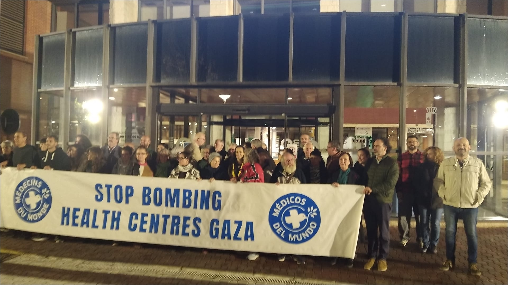

Misma bandera; diferentes enfoques

El pasado día 11 de octubre entraba en vigor el alto el fuego entre Hamás y el Gobierno israelí. Un Acuerdo de paz que traía la liberación de personas que llevaban dos años prisioneras en condiciones inhumanas, y el aparente fin de la masacre contra la población civil de Gaza. Tras el Acuerdo, la Comunidad internacional ha instalado en la zona la Fuerza de Seguridad Internacional (ISAF por sus siglas en inglés), para velar por el cumplimiento de dichos acuerdos por ambas partes.
Un mes después del “cese de las hostilidades”, unas 250 personas han muerto y más de 600 han resultado heridas en Gaza a causa de bombardeos del Ejército israelí. Según la OMS, la entrada de ayuda humanitaria sigue siendo insuficiente y se está dificultando por parte del Gobierno de Israel la vacunación de más de 40.000 niños palestinos; se cifran en más de 1.900 personas las fallecidas por diferentes causas durante este periodo, en un territorio totalmente devastado y donde la mayoría de la población carece de medios básicos para mantener un mínimo nivel de vida.
Por el contrario, al otro lado de la “línea amarilla” trazada entre ambos territorios, el Gobierno israelí ha aprobado un proyecto de ley que impone la pena de muerte a los terroristas que hayan asesinado a israelíes mientras, simultáneamente, ha llevado a cabo bombardeos en el otro territorio palestino, Cisjordania, donde además se han perpetrado más de 260 ataques de colonos israelíes contra población local sólo durante el mes de octubre, cifra record desde 2006; a pesar de que en este territorio no opera el supuesto enemigo de esta guerra, Hamás.
Ante este panorama, no podemos entender el “apagón informativo” en los medios de comunicación. Sin repercusión mediática, las atrocidades quedan relegadas al ostracismo, como en Sudán, cuya bandera se podría confundir fácilmente con Palestina, cuyo conflicto desde abril de 2023 es uno de los más atroces en víctimas y número de desplazados y cuyo drama humano no merece espacio en los telediarios.
Desde el Foro Social, tal y como hicimos hace un mes a las puertas del Ayuntamiento, seguimos exigiendo a nuestros gobernantes que no cesen en la presión al gobierno israelí mediante el embargo de armas y la ruptura de relaciones comerciales con este país, hasta que no haya pruebas evidentes de que Israel cumpla este acuerdo; y nos sumamos a todos aquellos movimientos de la sociedad civil que no han cesado en sus acciones contra este GENOCIDIO. Seguimos pensando que la verdadera Paz no llegará hasta que se resarza a las víctimas y se enjuicie a los responsables de esta masacre.

De la misma forma desde el Foro Social también nos hacemos eco de la situación del pueblo saharaui tras la propuesta del Gobierno de Donald Trump votada por la ONU el pasado 31 de octubre. Una propuesta que busca poner paz en este territorio avalando el plan de autonomía propuesto en 2007 por Marruecos y cuya votación salió favorable con las abstenciones de China, Rusia y Pakistán.
El Sáhara, un territorio bajo una bandera igual a la de Palestina, fue una provincia más de España hasta el año 1975 en que fue ocupada ilegalmente por Marruecos, desde entonces sigue a la espera del referéndum de autonomía que debía haberse llevado a cabo en 1991 poniendo fin al proceso de descolonización, para lo que se constituyó por parte del Consejo de Seguridad de Naciones Unidas, la MINURSO (Misión de Naciones Unidas para el Referéndum en el Sáhara Occidental), cuyo mandato se renueva año tras año, cada mes de octubre, mientras miles de saharauis viven desplazados de sus casas desde hace 50 años, en campos de refugiados en mitad del desierto, como el de Tinduf (Argelia); o dentro de su propio territorio en verdaderos guetos. Marruecos, potencia de ocupación, al igual que Israel, vulnera los derechos humanos de la población civil impidiéndoles el desplazamiento dentro de sus propios territorios y sometiéndoles a constantes agresiones y humillaciones que violan el Derecho Internacional. Simultáneamente, expolia los recursos de este territorio con la participación de otros gobiernos y empresas extranjeras; un reciente documental llamado OCUPACIÓN S.A. arroja luz sobre la participación de empresas españolas en la zona.
Choca ver como el Ejecutivo de Pedro Sánchez, condena por un lado con vehemencia la violación del Derecho Internacional en otros territorios como Palestina o Ucrania, mientras aquí apoya a la potencia de ocupación, máxime cuando España tiene una responsabilidad directa sobre este territorio, a diferencia de Palestina, ya sigue siendo la potencia administradora según la Legislación Internacional y, por tanto, la responsable directa de la vulneración de los derechos humanos que se está produciendo por parte de Marruecos mientras no se celebre el Referéndum y se dé por concluido el proceso de descolonización.
El desarrollo de los acontecimientos en las últimas semanas tras la propuesta de Trump supone el fin de las esperanzas y la condena a perpetuidad de la injusticia que se viene cometiendo durante décadas. Desde el Foro Social reivindicamos a nuestros gobernantes coherencia en sus políticas y apoyo explícito a estos territorios.
Foro Social de Campo de Criptana
Por una democracia más participativa
El Foro Social de Campo de Criptana es un espacio socio-político de participación ciudadana, abierto, horizontal y no partidario que trabaja por una democracia más participativa principalmente a nivel municipal, pero también global.